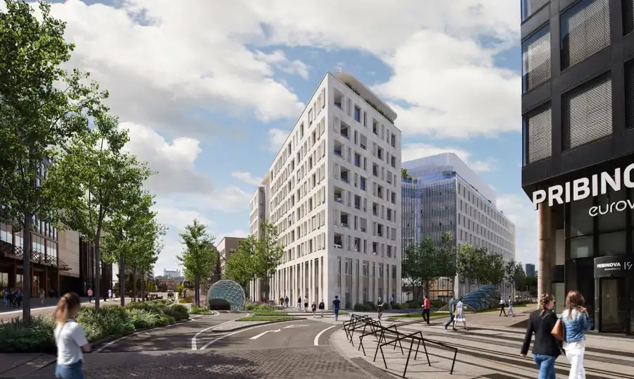
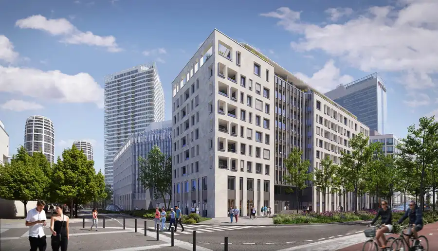
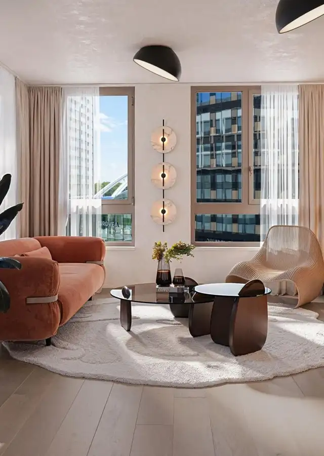
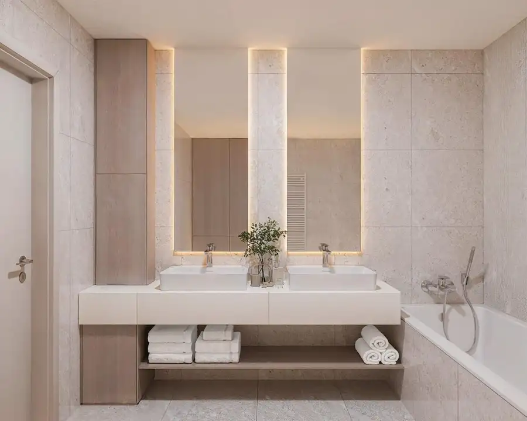
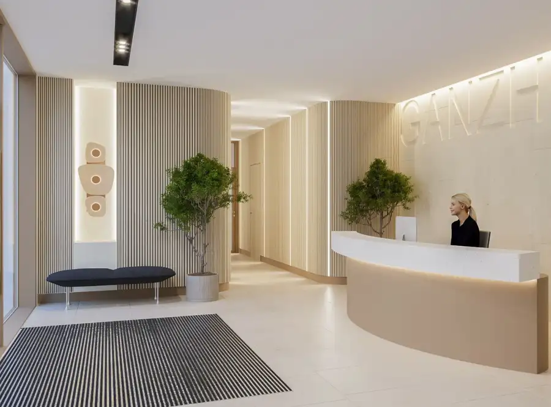
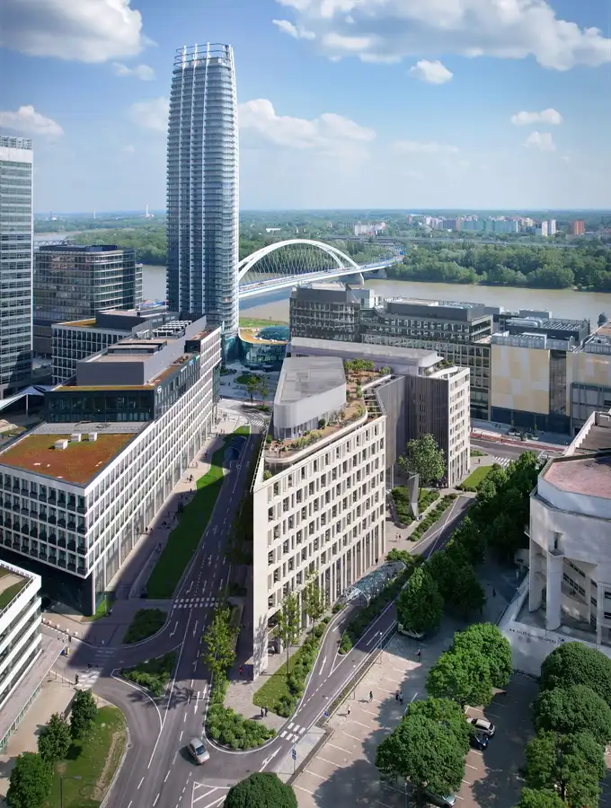
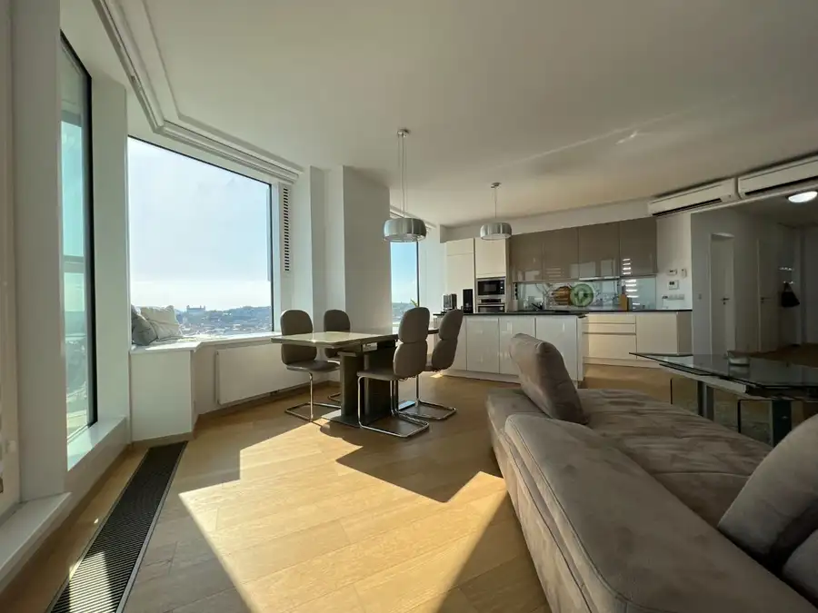
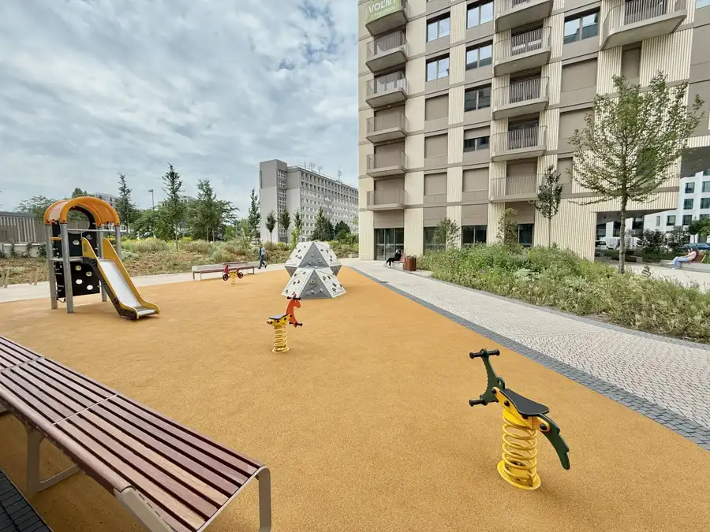

GANZ HOUSE - Exkluzívny 3-izbový byt v srdci Eurovea City
Nivy, Bratislava






- Dispozícia3-izbový
- Plocha80 m²
- Poschodie5. z 9
- Vlastníctvoosobné
O nehnuteľnosti
Realitná kancelária NUERA vám exkluzívne ponúka na predaj nadštandardný 3-izbový byt v najočakávanejšom butikovom projekte Ganz House, situovanom v samom centre nového bratislavského „downtownu“. Tento výnimočný projekt spája nekompromisný luxus, moderné technológie a životný štýl pulzujúceho veľkomesta na brehu Dunaja.
ZÁKLADNÉ PARAMETRE BYTU:
Typ: 3-izbový byt
Interiér: 78,60 m²
Exteriér (Lodžia): 7,20 m²
Garážové státie: 1
Kobka: 2 m²
DISPOZÍCIA:
Byt ponúka veľkorysý a premyslený priestor pre ten najvyšší komfort. Srdcom bytu je priestranná obývacia izba (19,10 m²), voľne prepojená s kuchynskou časťou (10,30 m²). Byt ďalej disponuje dvomi neprechodnými izbami (16,20 m² a 12,10 m²), reprezentatívnou predsieňou (8,70 m²), luxusnou kúpeľňou (6,40 m²), samostatným WC (1,60 m²) a praktickou komorou (4,20 m²). Z obytných miestností máte priamy prístup na presklenú lodžiu , ktorá je vybavená exteriérovým stropným dizajnovým svietidlom.
PRÉMIOVÝ DIZAJN A ŠTANDARD:
Tento výnimočný byt sa predáva s už starostlivo vybraným prémiovým štandardom, ktorý odráža najnovšie trendy a najvyššiu kvalitu materiálov z exkluzívnych dizajnových línií projektu: Podlahy: Elegantné kartáčované drevené parkety s drevenou dýhou Kúpeľne: Sú obložené luxusným rektifikovaným gresom. O vašu relaxáciu sa postarajú špičkové zariaďovacie predmety švajčiarskej značky Laufen a dizajnové batérie Hansgrohe. Dvere: Bezfalcové interiérové dvere Classen so skrytými pántmi a moderným magnetickým zámkom. O bezpečnosť sa starajú vchodové protipožiarne dvere v ocelovej zárubni (bezpečnostná trieda 3) s panoramatickým priezorom. Zariadenie na mieru: Byt je dizajnovo pripravený, na inštaláciu špičkových talianskych kuchynských liniek a vstavaných šatníkov od renomovanej značky Caccaro, ktoré je v spolupráci s developerom JTRE možné zrealizovať už v čase preberania bytu, vďaka čomu ho môžete okamžite užívať.
ŠPIČKOVÉ TECHNOLÓGIE PRE VÁŠ KOMFORT:
Klimatizácia a chladenie: Všetky obytné miestnosti sú štandardne vybavené stropným chladením so samostatnou reguláciou pre celý byt.
Vykurovanie: Útulné teplo domova zabezpečuje teplovodné stropné sálavé vykurovanie s nástenným termostatom v každej izbe. V kúpeľniach oceníte rebríkový radiátor a komfortné elektrické podlahové vykurovanie.
Vzduchotechnika: Neustály prísun čerstvého vzduchu s optimálnou hygienickou výmenou zabezpečuje rovnotlakové rekuperačné vetranie, kde je vzduch v zime predhrievaný a v lete naopak predchladený.
Okná a inteligentné tienenie: Hliníkové okná s izolačným trojsklom výborne tlmia okolitý hluk. Sú doplnené o exteriérové látkové rolety so zvýšenou odolnosťou voči vetru, ktoré môžete centrálne ovládať pohodlne z jedného miesta priamo pri vstupe do bytu.
VIP SERVIS A SPOLOČNÉ PRIESTORY:
Bývanie v rezidencii Ganz House poskytuje výnimočné pohodlie. Dizajnová vstupná lobby je vybavená monitorovanou 24-hodinovou recepciou. Vstupy do bytového domu a podzemné garáže sú dôsledne monitorované kamerovým systémom so záznamom. Spoločné chodby na poschodiach zdobia zvukovoizolačné koberce a luxusné dizajnové umývateľné tapety.
LOKALITA A OKOLIE –EUROVEA CITY:
Ganz House mení mestské bývanie na každodenný exkluzívny zážitok v úplnom srdci mesta. Bývanie tu znamená bezprostrednú blízkosť nábrežnej promenády, nákupného centra, prvotriednych reštaurácií a kultúrnych stánkov. Kompletná občianska vybavenosť je samozrejmosťou.
KONTAKTUJTE NÁS:
Pre bližšie informácie o cene tejto výnimočnej nehnuteľnosti nás neváhajte kontaktovať. Ak by tento konkrétny byt nespĺňal stopercentne všetky vaše predstavy a požiadavky, veľmi radi vám predstavíme a ukážeme aj ďalšie dostupné jednotky v tomto exkluzívnom projekte. Tešíme sa na stretnutie s vami!
Parametre
- Celková rozloha
- 88 m²
- Úžitková plocha
- 80 m²
- Poschodie
- 5/vyššie poschodie
- Počet poschodí
- 9
- Počet izieb
- 3
- Vlastníctvo
- osobné
- Status
- aktívne
- Odvoz odpadu
- áno - separovaný
- Plyn
- nie
- Internet
- optika
- Kúpeľňa
- áno
- Vykurovanie
- spoločné
- Lódžia
- áno - 2
- Pivnica
- áno
- Výťah
- áno
- Parkovanie
- vlastné vyhradené
- Postavené z
- Zmiešané
- Zariadenie
- nezariadený
- Krb
- nie
- Klimatizácia
- áno
- Káblová televízia
- áno
- Energetický certifikát
- áno
- Okná
- hliníkové
- Orientácia
- západná
- Novostavba
- áno
- Dátum zverejnenia
- 2026-05-07
Kde to je
Mohlo by Vás zaujímať

BytNové 750 000 €PANORAMA CITY - 3i byt s výhľadom na hrad, 26.p. 97m2, 2 kúpeľne Staré Mesto, Bratislava 3-izbový93.8 m²26. podlažie
BytNové 449 000 €MILLHAUS - 3,5i byt, šatník + 2x balkón, parking Nivy, Bratislava 3,575 m²12. podlažie PozemokNové
700 000 €PREDAJ - Lukratívny pozemok so starším domom pri Horskom parku
Staré Mesto, Bratislava
6-izbový220 m²
PozemokNové
700 000 €PREDAJ - Lukratívny pozemok so starším domom pri Horskom parku
Staré Mesto, Bratislava
6-izbový220 m²